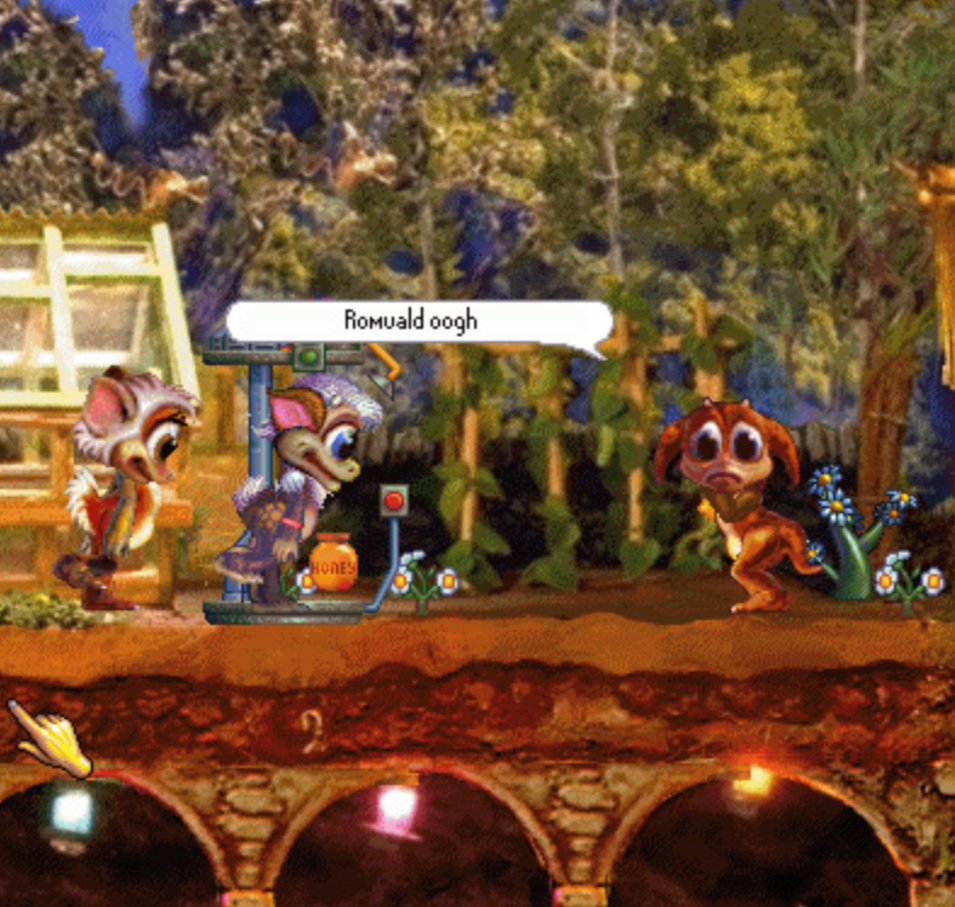

INTELIGENCIA ARTIFICIAL: FIFA
Usa frames captados de partidos reales
Redes neuronales interactúan
con un refuerzo bioquímico
para accionar.

Las decisiones cambian según
su estado interno y lo que ha aprendido
a lo largo de su vida.
